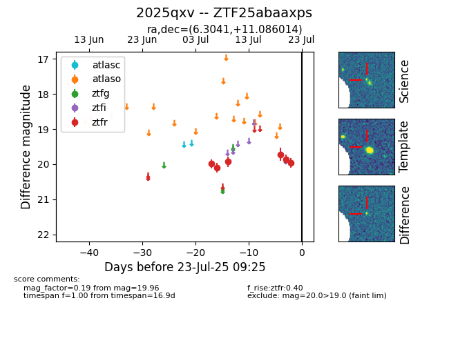

Target ZTF25abaaxps at 2025-07-23 11:48, see:
FINK: fink-portal.org/ZTF25abaaxps
Lasair: lasair-ztf.lsst.ac.uk/objects/ZTF25abaaxps
ALeRCE: alerce.online/object/ZTF25abaaxps
TNS: wis-tns.org/object/2025qxv
YSE: ziggy.ucolick.org/yse/transient_detail/2025qxv
alt names
ZTF25abaaxps (ztf,fink)
2025qxv (tns,yse)
coordinates:
equatorial (ra, dec) = (6.3041,+11.08601)
galactic (l, b) = (112.6188,-51.25991)
photometry
last ztfr=19.96
6 ztfr detections
